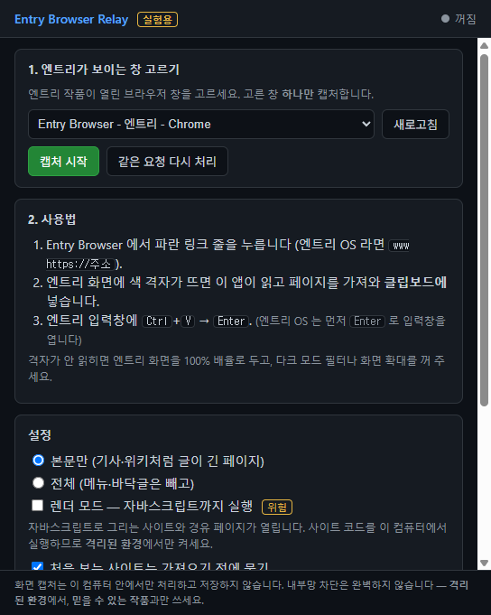

엔트리 안에서
진짜 웹을 읽는 브라우저
실험용 프로젝트입니다. 엔트리 블록으로 만든 텍스트 브라우저와, 그것을 실제 인터넷에 이어 주는 중계 앱으로 이루어져 있습니다. 엔트리 작품은 인터넷에 닿을 수 없어서, 화면과 클립보드를 통신선으로 씁니다.
중계 앱이 클립보드에 넣었습니다
먼저 읽어 주세요
- 이 프로그램은 실험 목적으로 만든 개인 프로젝트입니다. 엔트리·네이버 커넥트재단과 관련이 없습니다.
- 화면을 캡처합니다. 고른 창 하나를 0.6초마다 찍어 엔트리 작품이 그린 색 격자를 찾습니다. 찍은 화면은 메모리에서만 다루고 파일로 남기거나 어디로도 보내지 않습니다.
- 요청대로 인터넷에 접속합니다. 엔트리 작품은 누구나 만들 수 있으므로, 악의적인 작품이 원치 않는 주소를 요청할 수 있습니다.
- 클립보드를 덮어씁니다. 응답이 준비될 때마다 클립보드 내용이 바뀝니다.
- 내부망·루프백 주소 차단, 처음 보는 사이트 확인 같은 보호 장치가 있지만 모든 위험을 막지는 못합니다. 가상 머신이나 Windows Sandbox 같은 격리된 환경에서 쓰기를 권장합니다.
- 믿을 수 없는 작품과 함께 쓰지 마세요. 사용에 따른 책임은 사용자에게 있습니다.
작동 방식
진짜 브라우저가 아닙니다. 중계 앱이 페이지를 글과 링크로 다시 배치해 보내면, 엔트리가 그것을 그립니다.
- 엔트리가 요청을 그립니다. 링크를 누르면 무대 왼쪽 띠에 주소를 담은 색 격자가 뜹니다. 체크섬과 요청 번호가 함께 담깁니다.
- 중계 앱이 읽고 가져옵니다. 앱이 그 창을 캡처해 격자를 읽고, 페이지를 가져와 줄 목록으로 배치한 뒤 클립보드에 넣습니다.
- 붙여넣으면 그려집니다. 엔트리 입력창에
Ctrl+V→Enter. 작품이 체크섬을 확인하고 페이지를 그립니다.
할 수 있는 것
- 제목·본문·목록·표·인용·코드, 문단 속 링크 색, 펼치기(
<details>) - 검색칸·체크박스·라디오·선택 상자·슬라이더 (GET 양식)
- 한글·한자(KS X 1001)·라틴·그리스·키릴·기호·《》 같은 넓은 글자
- 렌더 모드(선택, 기본 꺼짐): 앱 안의 Chromium 으로 자바스크립트를 실행하고 사이트의 CSS 색·크기까지 옮김
- 레이아웃 모드(실험 기능, 불안정): 실제 사이트 배치를 쪽 단위로 옮김. 사이트에 따라 글이 겹치거나 자리가 어긋남
못 하는 것
- 그림·동영상·소리 (그림은 대체 글로)
- 로그인·POST 양식·파일 올리기
- 누르면 스크립트가 바꾸는 버튼·탭

다운로드
Windows 10/11 (64비트). 빌드본은 GitHub Actions 가 공개된 로그로 만들어 릴리스에 올립니다.
중계 앱 설치판 받기- Portable 판: 설치 없이 바로 실행합니다. 가상 머신이나 Windows Sandbox 에 알맞습니다.
- 엔트리 작품 파일 (
entry-browser.ent): 엔트리에서 [작품 불러오기]로 엽니다. - SHA256SUMS.txt: 받은 파일이 올린 파일과 같은지 확인합니다.
코드 서명을 하지 않아 Windows SmartScreen 경고가 뜹니다 (추가 정보 → 실행).
걱정된다면 아래처럼 직접 빌드하는 것을 권합니다. 받은 파일 확인:
Get-FileHash .\EntryBrowserRelay-Portable.exe -Algorithm SHA256모든 버전은 Releases 에 있습니다.
엔트리 작품
작품 파일(.ent)을 받아 엔트리에서 [작품 불러오기]로 열어도 됩니다.
사용법
- 중계 앱을 실행합니다. 고지문을 읽고 동의한 뒤, 엔트리 작품이 열린 브라우저 창을 고르고
캡처 시작을 누릅니다. - 작품에서 링크를 누릅니다. 파란 링크 줄이나 주소창을 누르면 왼쪽 띠에 격자가 뜨고 입력창이 열립니다.
- 붙여넣습니다. 알림이 뜨면 입력창에
Ctrl+V→Enter. 빈 칸으로Enter를 누르면 취소입니다.
격자가 읽히지 않아요
- 엔트리 무대를 가리는 것이 없는지, 브라우저 확대가 100% 인지 봅니다.
- 다크 모드 확장 프로그램이나 색 필터(야간 모드 포함)를 끕니다. 색이 바뀌면 못 읽습니다.
- 무대가 너무 작으면 못 읽습니다. 창을 키우거나 전체 화면으로 봅니다.
글자가 넘치거나 링크를 누르는 자리가 어긋나요
작품 주소창에 ruler.html 을 쳐서 글자 폭 확인 페이지를 보고, 화면을 찍어
이슈로 알려 주세요. (Windows 의 맑은 고딕 기준으로 맞춰져 있습니다)
렌더 모드는 안전한가요?
방문하는 사이트의 자바스크립트를 이 컴퓨터에서 실행하므로 텍스트 모드보다 위험합니다. 앱 안의 프록시가 모든 요청에 내부망 차단을 걸고, 샌드박스·메모리 세션·권한 거절로 가두지만 Chromium 자체의 취약점은 막지 못합니다. 켤 때는 가상 머신이나 Windows Sandbox 에서 쓰세요.
직접 빌드하기
빌드본을 믿기 어렵다면 소스를 직접 읽고 빌드하세요. 실행 의존성은 electron, jsdom, @mozilla/readability 셋뿐입니다.
git clone https://github.com/smilepark2013-lang/entry-browser.git
cd entry-browser
npm install
npm start # 빌드 없이 바로 실행
npm run dist # dist/ 에 설치판과 portable 판
npm run build:entry # entry/build/entry-browser.ent (엔트리 작품)보안이 걱정된다면 이 파일들부터 읽어 보세요:
src/main.mjs (캡처 권한·요청 처리·클립보드),
src/lib/guard.mjs (주소 검사·내부망 차단),
src/renderer/capture-worker.mjs (격자 읽기).